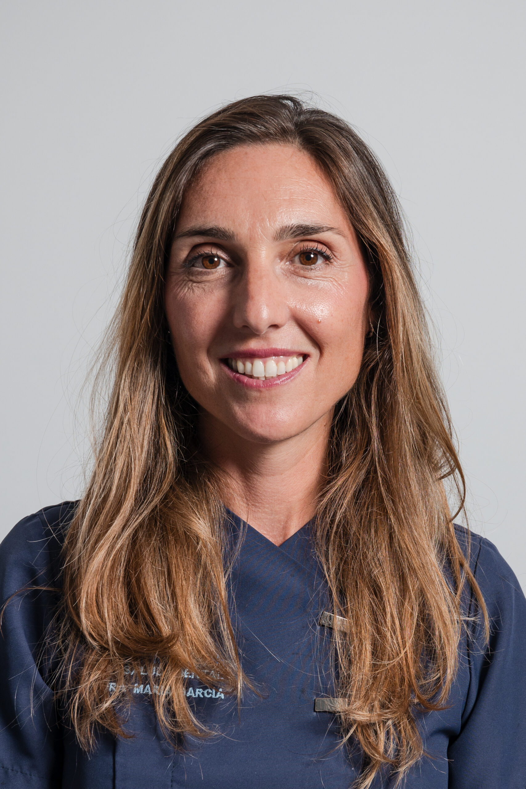
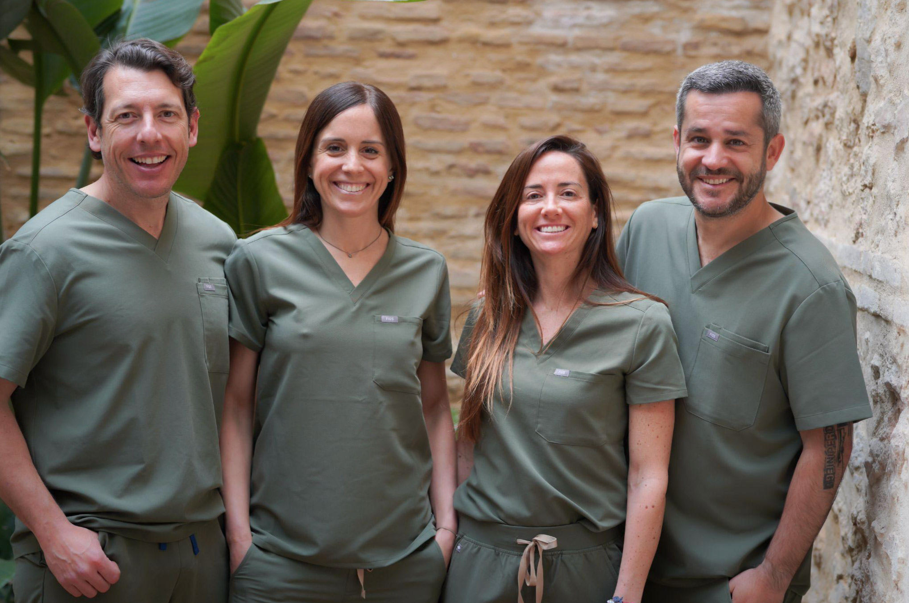
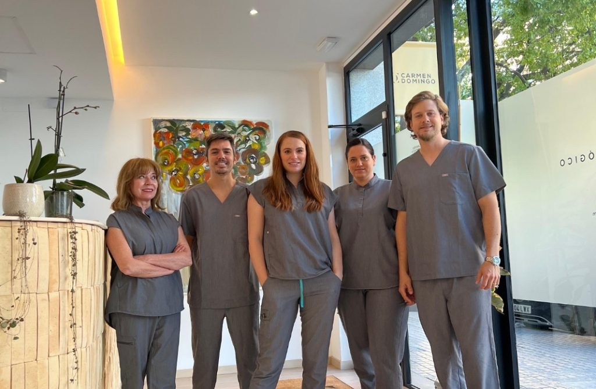
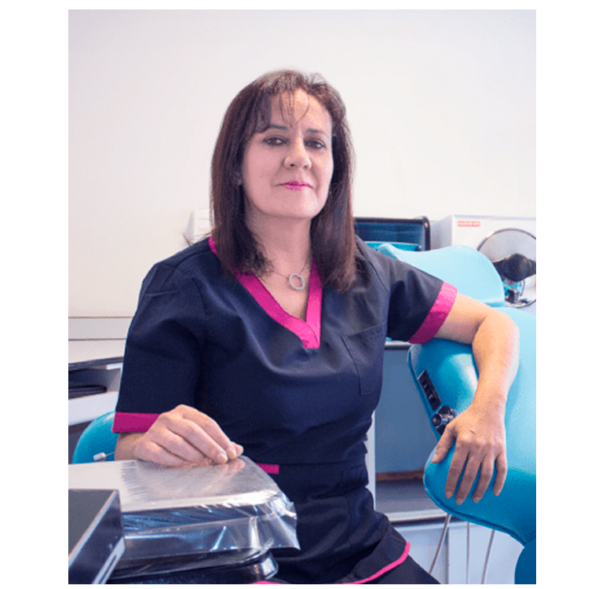

Cinco clínicas.
Cinco formas de conectar.
Identidad, fotografías, mensajes y recorridos propios. Explora cinco webs con identidad propia. Una nueva edición centrada en las personas, la claridad y una primera impresión que invita a quedarse.
Gemma Martínez
Asúnsolo
Azules, geometría y rutas distintas para adultos, menores y seguimiento.
Ver la nueva web ↗
43Clínica Dental
Such
Azul profundo, especialista protagonista y una valoración antes de elegir técnica.
Ver la nueva web ↗
44Odontology
IGS Clinic
Verdes y tonos piedra, composición editorial y un equipo multidisciplinar visible.
Ver la nueva web ↗
45Carmen
Domingo
Dorado y crema, imágenes del centro y cuidados para cada etapa de la familia.
Ver la nueva web ↗
46Déniz
Clínica Dental
Cian y melocotón, trayectoria de Pilar y atención presencial como eje de la página.
Ver la nueva web ↗Conceptos ilustrativos preparados por Atlis. Las interacciones funcionan como demostración y no envían datos.